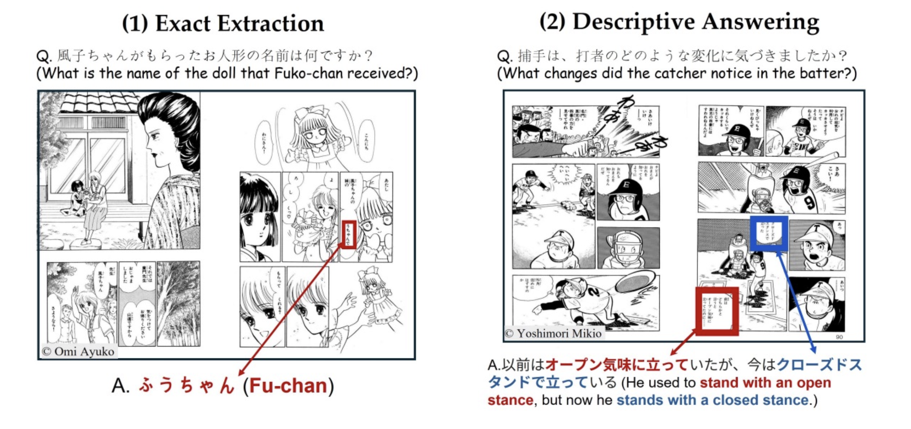
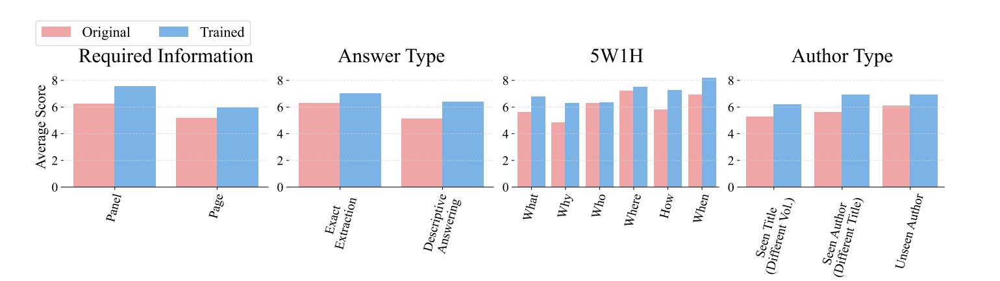
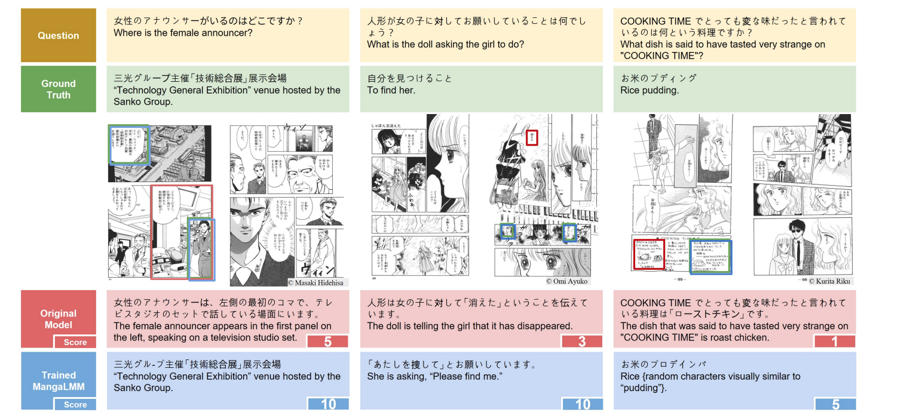

Manga, or Japanese comics, is a richly multimodal narrative form that blends images and text in complex ways, featuring intricate panel layouts, expressive visual elements, and text embedded directly within images. Teaching large multimodal models (LMMs) to understand such narratives at a human-like level could help manga creators reflect on and refine their stories. Such models could assist manga creators by functioning like a skilled editor or assistant, capable of reading and understanding manga in the way humans do. This calls for evaluating models' abilities to process visual-textual content and follow the context in a coherent and human-like manner.
We present MangaVQA, a benchmark of 526 manually constructed question–answer pairs designed to evaluate an LMM's ability to accurately answer targeted, factual questions grounded in both visual and textual context. The questions are categorized along four key axes: required information (panel vs. page level), answer type (exact extraction vs. descriptive answering), 5W1H question types, and author familiarity.
We also present MangaOCR, focusing on in-page text detection and recognition. MangaOCR consolidates annotations from the Manga109 dataset and the manga onomatopoeia dataset, containing approximately 209K narrative text instances including dialogue and onomatopoeia. Together, these benchmarks enable comprehensive evaluation of multimodal manga understanding.
MangaLMM is a manga-specialized version of Qwen2.5-VL, finetuned to jointly address both VQA and OCR tasks. We construct training data by using the MangaOCR annotations directly for OCR training, and by generating 39,837 synthetic VQA samples using GPT-4o with OCR annotations as guidance. This joint training enables MangaLMM to perform human-like manga understanding by combining text recognition with contextual comprehension.
We perform extensive analysis and evaluate MangaLMM against proprietary models such as GPT-4o, Gemini 2.5, and Claude Sonnet 4.5, as well as various open-source LMMs. Our results reveal that even state-of-the-art proprietary models achieve near-zero OCR scores on manga, highlighting the limitations of general-purpose LMMs in stylized visual domains. In contrast, MangaLMM achieves 71.5% OCR Hmean and a competitive 6.68 VQA score, demonstrating promising performance on both tasks.
We selected Manga109 for its open-access license, diverse manga titles, and rich annotations. Manga109 is a dataset composed of 109 volumes of Japanese comics (manga), capturing many distinctive features:
Illustration of a two-page spread from the Manga109 dataset.
Text in manga carries essential narrative information, appearing as speech balloons and stylized onomatopoeia integrated into the artwork. MangaOCR addresses this challenge by targeting two key categories of embedded text:
Dialogue
~148K instances
Onomatopoeia
~61K instances
We construct the MangaOCR dataset by consolidating existing annotations from the Manga109 dataset and the manga onomatopoeia dataset. It contains approximately 209K narrative text instances, spanning a wide variety of visual styles and layouts.
The MangaOCR task is performed on two-page spreads and consists of two sub-tasks:
We adopt a dataset split protocol based on author information to evaluate different types of generalization:
Intra-series
5 test volumes from same series as training set (different volumes)
Intra-author
5 test volumes from authors with other works in training set
Unseen Author
3 test volumes from authors not in training set
| Count Type | Total | Train | Valid | Test |
|---|---|---|---|---|
| Comic volumes | 109 | 89 | 7 | 13 |
| Images | 10,602 | 8,763 | 673 | 1,166 |
| MangaOCR | ||||
| Dialogue | 148K | 120K | 9K | 18K |
| Onomatopoeia | 61K | 50K | 4K | 7K |
| Total | 209K | 170K | 13K | 26K |
| MangaVQA | ||||
| QA pairs | 40,363 | 39,837 | − | 526 |
To evaluate model performance under realistic conditions, we manually constructed 526 question–answer (QA) pairs based on images from Manga109. Five annotators carefully developed a high-quality evaluation set, incorporating thorough human inspection and verification.
The question types are designed based on four key axes:
(1) Exact Extraction (240 questions): Questions that require extracting answer words from the image. These questions necessitate accurately retrieving the answer word from the manga page. This category assesses the LMM's basic comprehension ability to identify and extract the correct answer part from the manga panels.
(2) Descriptive Answering (286 questions): Questions that require contextual or explanatory responses. These questions go beyond simple answer word extraction and require comprehending the context within the manga. This category allows us to evaluate whether the LMM can not only recognize the dialogue but also understand its underlying meaning in the context of the narrative.
For the OCR task, we use the MangaOCR training set. For each image, we format the sequence of text annotations as:
For the VQA task, we generate synthetic training data using GPT-4o (gpt-4o-2024-11-20). Following the synthetic data construction approach used in LLaVA, we generate five questions per image using both the image and its OCR annotation from TOCR.
As a result, we created a total of 39,837 synthetic VQA samples from 8,379 images.
The following table shows the comparison of LMMs on MangaOCR and MangaVQA.
| Method | MangaOCR Hmean (%) |
MangaVQA LLM (/10.0) |
|---|---|---|
| Proprietary Models | ||
| GPT-4o | 0.0 | 6.00 |
| Gemini 2.5 Flash | 0.0 | 7.26 |
| Claude Sonnet 4.5 | 0.0 | 5.84 |
| Open-source Models | ||
| Phi-4-Multimodal-5.6B | 0.0 | 3.39 |
| Pangea-7B | 0.0 | 3.23 |
| LLaVA-OV-1.5-8B | 0.0 | 3.46 |
| Sarashina2-Vision-8B | 0.0 | 4.45 |
| Gemma-3-12B | 0.0 | 4.13 |
| Heron-NVILA-Lite-15B | 0.0 | 3.76 |
| Qwen2.5-VL-7B | 0.9 | 5.65 |
| Ours | ||
| MangaLMM (Ours) | 71.5 | 6.68 |
MangaLMM can handle both tasks effectively: it achieves over 70% OCR score and shows competitive VQA performance. While it falls short of the proprietary model Gemini, it outperforms the other proprietary models GPT-4o and Claude Sonnet 4.5. MangaLMM achieves the best performance among the open-source models by a clear margin.
As shown in the results table, all LMMs except MangaLMM show near-zero scores on the MangaOCR benchmark. Most of their predictions consist of meaningless repetitions or short repeated tokens. The extremely low OCR score before finetuning is likely due to two main factors: (1) these models are not familiar with manga data, and (2) their weak detection capabilities may limit OCR performance.
Despite the near-zero OCR score, where not only position information is missing but even the correct text content is not generated, these models still manage to answer certain VQA questions that require interpreting text within the image. This suggests that they are able to extract relevant information needed for answering VQA questions, even without performing OCR correctly.
We observe consistent performance gains across all tags, indicating that our training contributes to stable improvement in VQA capability without favoring specific categories. Interestingly, the model also generalizes well to questions from unseen authors.
We compare outputs of the original Qwen model and our trained MangaLMM. In the left and middle examples, performance improves significantly after training—the original model provides general or irrelevant answers, whereas the trained model leverages text-bubble content to produce more specific and correct ones.
In the right example, the trained model still struggles to produce an accurate answer due to character-level recognition errors, highlighting remaining challenges in manga understanding.
@inproceedings{baek2025mangavqa,
author = {Baek, Jeonghun and Egashira, Kazuki and Onohara, Shota and Miyai, Atsuyuki and Imajuku, Yuki and Ikuta, Hikaru and Aizawa, Kiyoharu},
title = {MangaVQA and MangaLMM: A Benchmark and Specialized Model for Multimodal Manga Understanding},
booktitle = {Findings of the Association for Computational Linguistics: EACL 2026},
year = {2026},
}